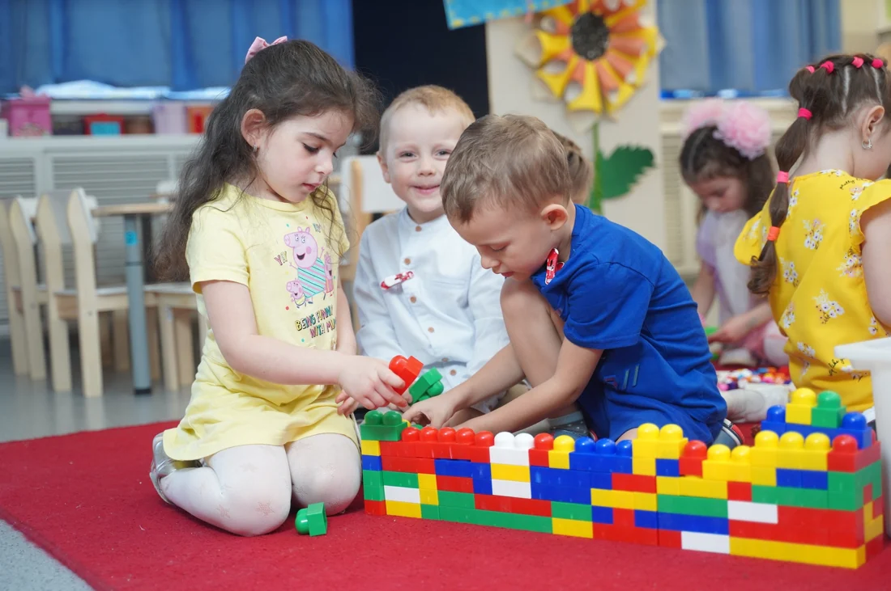

Мурино
LEGO, музыка с мамой, танцы, рисование и подготовка к школе.
Занятия в МуриноОт первых занятий вместе с родителями до подготовки к школе. Выберите сад, чтобы посмотреть программы, цены и абонементы.

LEGO, музыка с мамой, танцы, рисование и подготовка к школе.
Занятия в МуриноОркестр, арт-студия, вокал, танцы, английский и речевые занятия.
Занятия в КудровоLEGO, детский фитнес, английский, рисование на воде и мультфильмы.
Занятия на КондратьевскомДети собирают модели, пробуют разные решения и рассказывают о том, что получилось. Занятия с LEGO Education есть в двух садах.
Открыт ли набор на программу, подскажет администратор выбранного сада.